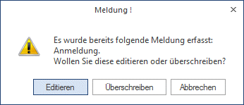
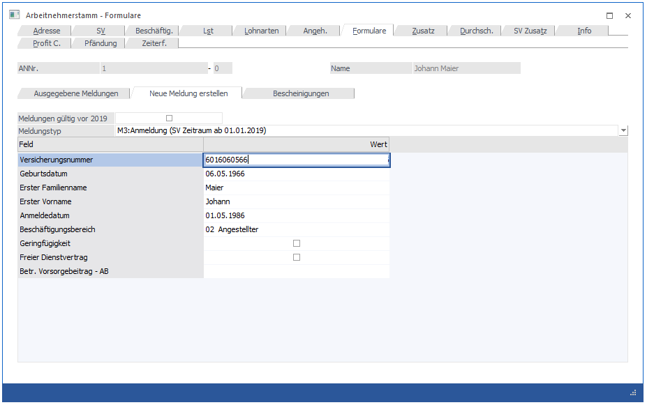
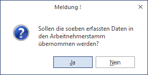

In diesem Register können neue Meldungen erfasst werden, wobei zwischen folgenden Meldungen unterschieden werden kann:
M3 Anmeldung
M4 Abmeldung
M6 Änderungsmeldung
M8 Richtigstellung Anmeldung
M9 Richtigstellung Abmeldung
S3 Storno Anmeldung
S4 Storno Abmeldung
AV Adresse Versicherter
VS VSNR Anforderung
GM Gesundheitsberuferegistermeldung
GS Gesundheitsberuferegistermeldung Storno
32 Mindestangaben-Anmeldung fallweise Beschäftigter
33 Storno Mindestangaben-Anmeldung fallweise Beschäftigter
60 Antrag auf Zuschuss für Entgeltfortzahlung
61 Storno Antrag auf Zuschuss für Entgeltfortzahlung
70 Arbeits- und Entgeltbestätigung für Krankengeld
71 Storno Arbeits- und Entgeltbestätigung für Krankengeld
75 Arbeits- und Entgeltbestätigung für Wochengeld
76 Storno Arbeits- und Entgeltbestätigung für Wochengeld
80 Anmeldung zur Familienhospizkarenz/Pflegekarenz
81 Abmeldung zur Familienhospizkarenz/Pflegekarenz
82 Änderungsmeldung zur Familienhospizkarenz/Pflegekarenz
83 Storno Anmeldung zur Familienhospizkarenz/Pflegekarenz
84 Storno Abmeldung zur Familienhospizkarenz/Pflegekarenz
85 Richtigstellung Anmeldung zur Familienhospiz
86 Richtigstellung Abmeldung zur Familienhospiz
90 Unfallmeldung - AUVA (U1 - unselbständig Erwerbstätige)
91 Unfallmeldung - AUVA (U2 - selbstständig Erwerbstätige)
98 Zuschuss für Entgeltfortzahlung (EFZ)
99 Arbeitsbescheinigung
Wenn eine Meldung aufgerufen wurde, die bereits einmal bearbeitet wurde, wird eine Meldung angezeigt, wobei es 3 Möglichkeiten gibt:

Ø Editieren:
Die bestehende Meldung kann editiert werden, alle bereits eingegebenen Daten werden wieder vorgeschlagen (sofern sie zuvor gespeichert wurden).
Ø Überschreiben:
Die bestehende Meldung soll überschrieben werden, alle Felder müssen neu eingegeben werden.
Ø Abbrechen:
Es kann ein anderer Meldungstyp ausgewählt werden.
Je nachdem, welche Meldung verwendet werden soll, werden unterschiedliche Felder zur Verfügung gestellt, die jedoch in den meisten Fällen für sich sprechen und daher keine weitere Erklärung benötigen.
Nachfolgend finden Sie dennoch die Erklärung zu einigen Feldern:
Abmeldung
Ø Abmeldegrund, Code
Aus einer Auswahllistbox kann der der Abmeldegrund gewählt werden. Wird die Option "00 Sonstige Gründe" gewählt, kann im Feld
Ø Abmeldegrund, Text
ein freier Abmeldegrund eingetragen werden.
Ø Kündigungsentschädigung ab
Ø Kündigungsentschädigung bis
Ø Urlaubsabfindung, -entschädigung ab
Ø Urlaubsabfindung, -entschädigung bis
In diesen Feldern werden die Datümer eingetragen, für die eine Kündigungsentschädigung bzw. eine Urlaubsabfindung, -entschädigung bezahlt wird. Dadurch wird die Pflichtversicherung des AN verlängert.
Ø Abmeldedatum
Das Abmeldedatum ist mit dem Datum, an dem der AN das letzte Mal gearbeitet hat, gleichzusetzen.
Ø Ende des Beschäftigungsverhältnisses
Bei Anfall einer Urlaubsabfindung oder -entschädigung oder einer Kündigungsentschädigung ist das Datum der Beendigung des Beschäftigungsverhältnisses immer älter als das Ende des Entgeltanspruches (Abmeldedatum).
Bei folgenden Abmeldegründen ist kein Ende des Beschäftigungsverhältnisses zu setzen, da das Dienstverhältnis arbeitsrechtlich nicht gelöst wurde (aufrecht ist):
ü "00" sonstige Gründe, Bildungskarenz, Karenzierung, Haft
ü "07" Karenzurlaub nach MSchG
ü "08" Präsenzdienstleistung im Bundesheer
ü "09" Zivildienst
ü "11" Länger als ein Monat währender unbezahlter Urlaub
ü "15" Truppenübung
Änderungsmeldung
Bei Änderungsmeldungen müssen an die ELDA spezielle Kennzeichen übermittelt werden. Aus diesem Grund können die gewünschten Felder erst dann editiert werden, wenn in der Spalte Ä.KZ die entsprechende Checkbox aktiviert ist.
Hinweis:
Wird eine der Checkboxen
ü Beschäftigungsbereich
ü Geringfügigkeit
ü Freier Dienstvertrag
aktiviert, so werden die beiden anderen Checkboxen automatisch mit aktiviert, da immer alle drei Bereiche gemeldet werden müssen.
Arbeitsbescheinigung
Die Arbeitsbescheinigung wird nur bei einer Unterbrechung bzw. bei der Beendigung des Beschäftigungsverhältnisses ausgestellt und an das Arbeitsamt weitergegeben. Diese Meldung kann ausschließlich gedruckt werden.
Achtung:
Nur auf gesonderte Anforderung hin, müssen die Bezüge der letzten 6 Monate ausgewiesen werden. Dies ist aber im Normalfall nicht notwendig, da die Werte bekannt sind.
Ø Ausstellungsgrund
Aus der Auswahllistbox wird der Grund für die Ausstellung der Arbeitsbescheinigung gewählt. Abhängig davon werden auch unterschiedliche Eingabefelder sichtbar:
Wird die Option "Karenzurlaub" gewählt, werden die Eingabefelder
Ø Karenzurlaub von
Ø Karenzurlaub bis
sichtbar.
Wird die Option "Lehrling" gewählt, werden die Eingabefelder
Ø Lehrzeitdatum von
Ø Lehrzeitdatum bis
sichtbar.
Ø Ende der Beschäftigung
In diesem Feld wird das Datum eingetragen, an dem das Beschäftigungsverhältnis endet. Hier wird das aktuelle Tagesdatum vorgeschlagen.
Ø Ende des Entgeltanspruches
In diesem Feld wird das Datum eingetragen, bis zu dem der AN Geld bezogen hat. Dieses Datum unterscheidet sich dann vom "Ende der Beschäftigung" wenn z.B. Kündigungs- und/oder Urlaubsentschädigungen ausgezahlt wurden. Diese verlängern die Versicherungspflicht entsprechend.
Ø Dienstverhältnis wurde beendet durch:
Wird hier die Option "5 - fristlose Entlassung gem. §" oder "6 - vorzeitiger Austritt gem. §" ausgewählt, muss im nächsten Feld
Ø gemäß §
der entsprechende Paragraph eingetragen werden.

Ø Meldungen gültig vor 2019
Wird diese Checkbox aktiviert, so stehen auch jene Meldungen zur Auswahl, die vor 2019 zu übermitteln waren.
Buttons
Ø OK
Durch Drücken der F5-Taste werden alle geänderten AN-Informationen gespeichert. Wurde eine neue Meldung erfasst, werden zwar die eingegebenen Werte gespeichert, es wird aber keine Meldung zur Ausgabe zur Verfügung gestellt.
Ø Ende
Durch Drücken der ESC-Taste wird das Fenster geschlossen, alle Änderungen gehen verloren.
Ø Speichern
Durch Anklicken des Speichern-Buttons wird die erfasste Meldung zur Ausgabe berücksichtigt. Gleichzeitig können geänderte Werte in die Stammdaten rückgeschrieben werden. Dies wird vom Programm abgefragt:

Wird diese Frage mit JA beantwortet, dann wird der AN-Stamm upgedatet. Wenn die Frage mit NEIN beantwortet wird, gelten die Änderungen nur für die elektronische Meldung.
Ø Drucken
Der Drucken-Button steht nur dann zur Verfügung, wenn eine "Arbeitsbescheinigung" oder ein "Zuschuss für Entgeltfortzahlung (EFZ)" erfasst wurde - dadurch wird die Arbeitsbescheinigung auf den eingestellten Drucker gedruckt.